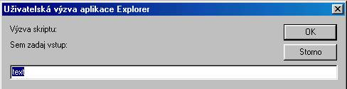

- Konštanty
- JavaScript rozoznáva nasledovné typy hodnôt:
- cisla, ako 42 nebo 3.14159
42, -15 ... desiatkové celé rozsah <-253;+253>
042 ... osmičkové celé
0xa1 ... hexa celé
1.5, -20.2, 1., .15, 1.01e2, 20e-2 ... reálne rozsah <10-308;10+308> - logické (Boolean) hodnoty; true nebo false
- reťazce, jako "Ahoj!"
- null, špeciálna hodnota označujúca prázdnu hodnotu
- NaN, špeciálna konštanta na označenie neúspešnosti niektorých funkcií
- undefined, špeciálna konštanta na označenie neexistencie vlastnosti objektu
- cisla, ako 42 nebo 3.14159
- Deklarovanie premenných
- Syntax: var zoznam ;
Typ premennej je určený priradením - jednoduché premenné nie je nutné deklarovať, JS ich zadeklaruje pri prvom výskyte ako globálnu neinicializovanú premennú (aj keď to bolo v podprograme) Kontrola typovej zhody nie je, ak do premennej zapíšeme hodnotu iného typu, premenná sa pretypuje.
a=5; //premenná a je číselného typu s inicializačnou hodnotou 5
a="Ahoj"+a; //premenná a zmení typ na reťazec s hodnotou Ahoj5
Premenná môže byť pri deklarácii inicializovaná.
Stringové (a vlastne všetky) premenné sú vlastne objektami, ale nemusíme ich ako iné objekty vytvárať pomocou new - Výrazy
- číselné operátory - +,-,*,/, %-zvyšok po delení, ++,--
- Ak sú oba operandy celočíselné je výsledok celočíselný (okrem /, ktoré dáva reálnu hodnotu)
- Ak je jeden operand text je aj druhý operand zmenený na text
- Ak je jeden operand číselný a druhý logický je true je nahradené 1 false je nahradené 0
- Ak je jeden operand textový a druhý logický je true resp. false prevedené na text
Príklad var a=3, b='12', c=-5.45, d=-5;
document.write(a++ +d); //vypise -2 a zväčší a o 1
document.write(a+b); //vypise 412
document.write(a/d); //vypise -0.8- Úlohy:
- ... Načítajte počet chlapcov a dievčat v triede a vypíšte počty v percentách
... Napíš stránku na výpočet mesačných splátok pôžičky
Vstup: 1. Požičaná suma, 2. Úrok v percentách, 3. Doba splácania v rokoch
Výstup: 1. Mesačná splátka, 2. Celková zaplatená suma, 3. Splatené úroky
- bitové operácie
- & - bitové AND
- | - bitové OR
- ^ - bitové XOR
- Príklad:
- var maska=2,b=1000;
b=b|maska; //nastavi 2. bit na 1
b=b^maska; //zakóduje hodnotu xorom
- logické operátory
- && - logické AND
- || - logické OR
- ! - logická negácia
- relačné operátory
- == - rovnosť
- != - nerovnosť
- < - menšie
- <= - menšie alebo rovné
- > - väčšie
- >= - väčšie alebo rovné
- stringové operátory
- + zreťazenie textov
- operátory priradenia
- = sémantika ... prem = výraz
- += sémantika ... prem = prem+výraz
- -= sémantika ... prem = prem-výraz
- *= sémantika ... prem = prem*výraz
- /= sémantika ... prem = prem/výraz
- operátor podmienka
- ?: syntax: logicky_vyraz ? vyraz1 : vyraz2 sémantika: vyhodnotí sa log. výraz, ak true vyhodnotí sa výraz1 inak výraz2 príklad: a=b>0 ? 1:-1; //zapise do A znamienko z B
- operátor čiarka
- ?: syntax: vyraz1 , vyraz2 sémantika: vyhodnotí sa výraz1, vyhodnotí sa výraz2 a ten je výsledkom
- Úlohy:
- ... Načítajte počet chlapcov a dievčat v triede a vypíšte koho je viac
- číselné operátory - +,-,*,/, %-zvyšok po delení, ++,--
- Vstup - výstup dát
- Ak chceme písať program (napr. hru), často potrebujeme načítať nejaké dáta - texty, čísla
a výsledok práce zas v dokumente zobraziť.
- Výstup do dokumentu
- Na výstup textu do dokumentu budeme používať metódu objektu document - write
alebo metódu writeln - vloží nakoniec CRLF - ale odriadkuje len ak sme v tagu <PRE>
syntax: document.write(zoznam výrazov)
sémantika: pri načítavaní write dopisuje do dokumentu, ak zavoláme write ako obsluhu udalosti prepíše celý dokument - preto ho volíme na výstup do nového prázdneho okna.
Výstup do objektu TextArea - pomocou vlastnosti value.
Výstup do objektu div, span a pod - pomocou innerText, innerHtml
Úloha:
Vytvor nové okno s obdĺžnikom axb hviezdičiek
Pri výstupe budeme často využívať nasledovné funkcie:- funkcie objektu Window eval(text), parseInt(text), parseInt(text,sústava), parseFloat(text)
- funkcie objektu Math - round(cislo), int(cislo)
- funkcie objektu String - substring(c1,c2), slice(od, po), toUpperCase(), toLowerCase(),fixed(), fontcolor(), fontsize()
velkosť 3 je štandartná, možnosti sú od 1 po 7
relatívne veľkosti možno zadávať pomocou reťazcov ("+2", "-1")
- Úlohy:
- Načítaj číslo v sústave1 a vypíš v sústave2
- Z formulára načítaj počet požadovaných desatinných čísel a vypíš číslo math.PI
- Výstup do pomocného preddefinovaného okna
- Už sme používali okno alert(lub_textovy_vyraz), zobrazený text nie možné formátovať.
- Výstup do nami vytvoreného okna - dokumentu
- Okno najprv vytvoríme, určíme mu vlastnosti a nakoniec mu zaplníme telo.
Pozri objekt Document a Window
- Vstup z formulára
- vstup je súčasťou dokumentu - <input type=text>
- z preddefinovaných pomocných vstupných okien - prompt, confirm
- prompt
- na nové okno zobrazí vstupný riadok a zadaný text je "prenesený"
do nášho programu.
- syntax: prem=prompt(textovy_vyraz1, textovy_vyraz1)
- textovy_vyraz1 - text nad vstupným riadkom
textovy_vyraz2 - imlicitný text vo vstupnom riadku - nepovinné
ukážka: prompt("Sem zadaj vstup:", "text");

sémantika: ak stlačíme OK vráti nám naklepaný text, inak vráti null - confirm
- Slúži na zadanie logickej hodnoty. V okienku sú dve tlačítka OK a Storno
syntax: confirm(textovy_vyraz)
textovy_vyraz - zobrazená výzva
sémantika: ak stlačíme OK vráti TRUE, inak vráti FALSE
- z nami vytvorených sekundárnych okien
- Pozri objekt window
- Úlohy:
- načítaj priezvisko a vypíš ho cez write - prvé písmeno modrým a o 1 väčším
- načítaj počet požadovaných desatinných čísel a vypíš číslo math.PI